payments made worldwide every day. About 6 billion of them are digital, and every one relies on cryptography.
Capgemini World Payments Report 2026Post-quantum cryptography platform
From hidden cryptography to a crypto-agile future.
PQLens finds the cryptography buried across your network, operating systems, code and hardware, ranks what matters, and guides your move to post-quantum standards. Every finding is explained for the board, GRC and engineers alike.
Built by the Monash University team whose research underpins NIST’s post-quantum standards FIPS 203, 204 and 206.
Resilience
Every lamp is a stream of digital payments protected by cryptography.
25+years of cryptographic research
FIPS 203 · 204 · 206NIST standards our research underpins
30M+reported downloads of our PQC code via Bouncy Castle
20Indo-Pacific nations in our PQC capacity-building program
The threat
Quantum computers will break today’s public-key cryptography. AI-assisted attacks are not waiting.
Harvest now, decrypt later. Encrypted traffic and backups copied today can be read once a quantum computer exists. Signatures trusted today can be forged later.
The Australian Signals Directorate expects classical public-key cryptography to be gone. NIST deprecates RSA and ECC the same year.
ASD guidance; NIST IR 8547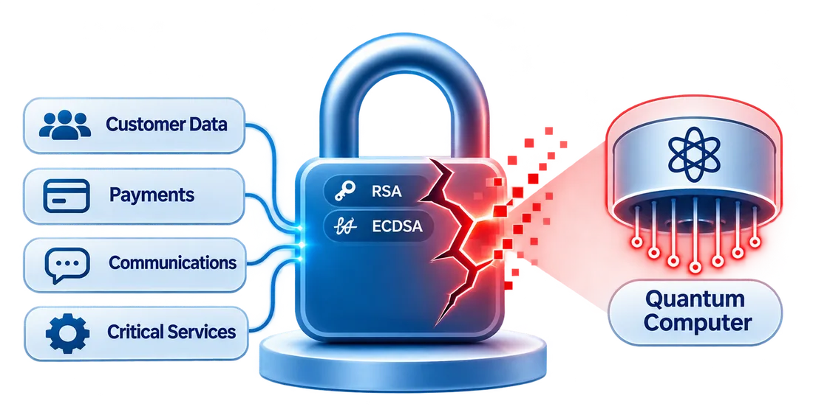
Deadlines are set
Regulators have put the dates on the calendar. Readiness is lagging.
- 2025PCI DSS 4.0
Annual cryptographic inventory (requirement 12.3.3) is already mandatory.
- End-2026ASD (Australia)
Plan and inventory in place.
- 2028ASD · UK NCSC
Migration begins; discovery and planning done.
- 2030ASD · NIST · G7
Classical public-key crypto gone in Australia; RSA and ECC deprecated in the US; critical finance systems migrating.
- 2035NIST · G7 · EU
Quantum-vulnerable cryptography disallowed everywhere.
Also in scope: APRA CPS 234 and CPS 230 board accountability, EU DORA, Canada OSFI B-13, MAS TRM guidelines and HKMA expectations.
Why it is hard
Why can’t an organisation just patch its systems?
Hidden in every layer
RSA and ECC sit in network protocols, operating-system libraries, application code, hardware and third parties. Most tools see one surface.
So you need discovery across every layer
Invisible to the board
Findings are technical. Boards, GRC and executives need risk, cost and compliance in their own words.
So you need explainability for every stakeholder
A moving target
Hybrid modes are evolving, and HQC and FN-DSA are still being standardised, while AI-assisted attacks keep improving. A one-off swap won’t last.
So you need crypto-agility, not a one-off project
Sovereignty
Discovery needs deep access to critical systems, and regulated organisations distrust foreign agents running inside them.
So you need fully on-premises deployment
Visibility · Clarity · Control · Resilience
One connected platform, from hidden crypto to actionable transition.
Built for decision-makers, risk teams and engineers.
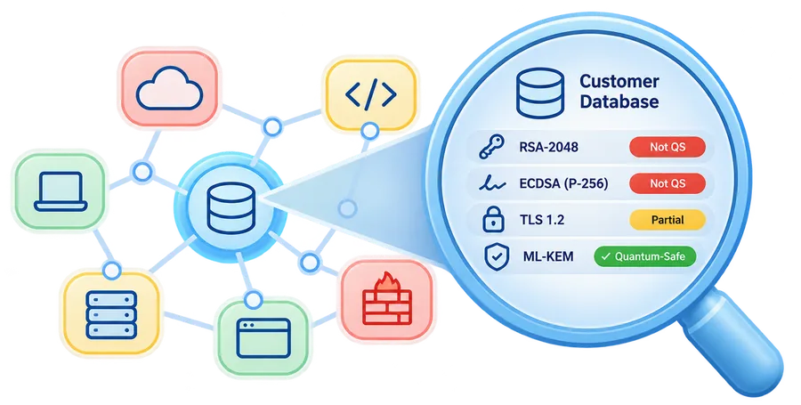
01Validated in pilots
Discover
See your exposure.
Passive and active discovery across network traffic, operating systems, software and code, and hardware, producing a standardised cryptographic bill of materials (CBOM).
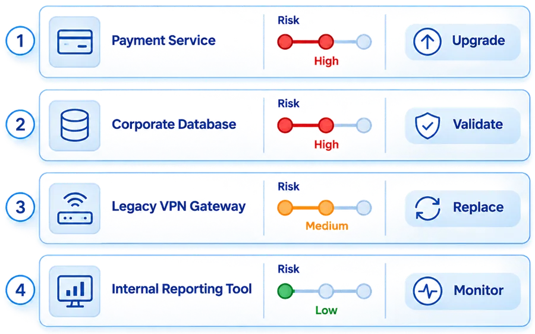
02Validated in pilots
Assess & prioritise
Know what matters.
Transparent, evidence-linked risk logic: data lifetime, criticality, dependency and feasibility, so the riskiest systems move first.
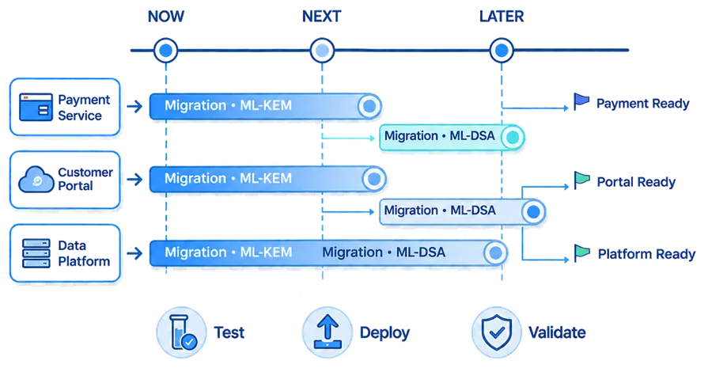
03Validating with partners
Plan & transition
Know your next move.
A phased migration roadmap (0–6, 6–18 and 18+ months) and technical support to move prioritised systems to NIST PQC standards and hybrid modes.
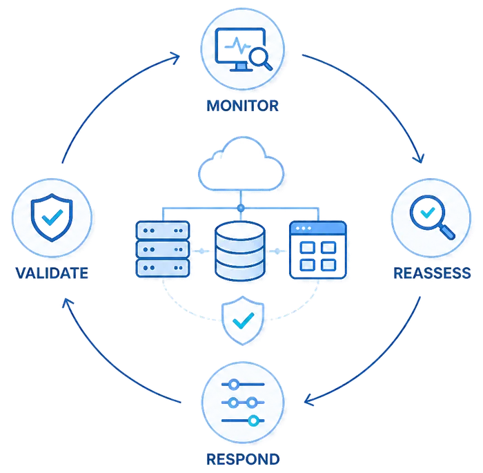
04Validating with partners
Assure & adapt
Continuously adapt.
Quality-assured transition and continuous monitoring. New standards such as FN-DSA, HQC and hybrids roll out as policy, not projects.
Four layers
- Network traffic
- Operating systems
- Software & code
- Hardware

One AI-native engine.
One evidence base.
Four audiences
- Board
- Posture against ASD 2030 and APRA expectations
- CISO · CTO · CEO
- Prioritised roadmap and budget
- GRC
- CPS 234 and CPS 230 evidence
- Technical teams
- CBOM, findings and fix tickets
What you receive
Six outputs, from live traffic to a board-ready migration roadmap.
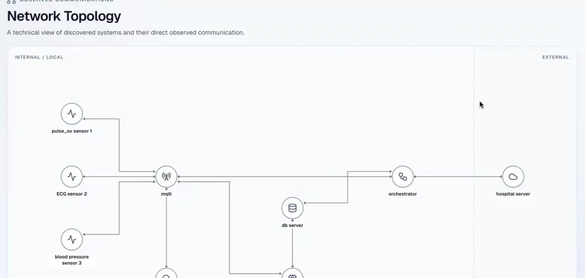
Systems and how they communicate, observed from live traffic.
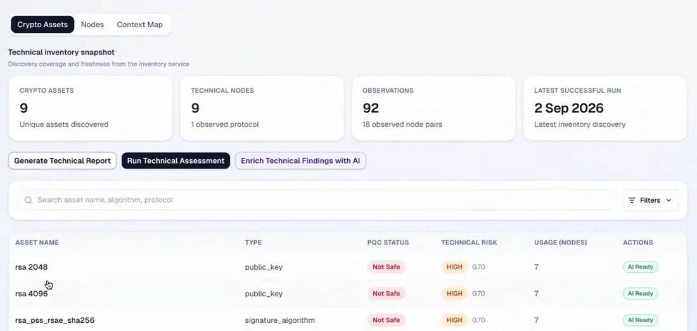
A standardised CBOM: every algorithm, key and cipher suite found, with PQC status and risk.
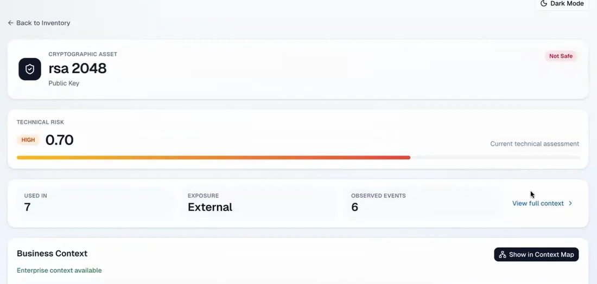
Risk score, exposure and business context for each asset.
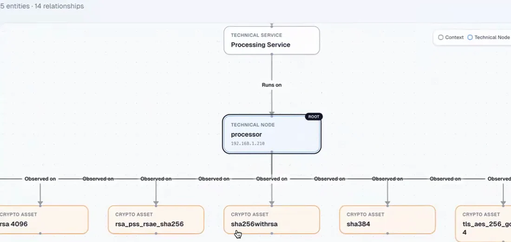
From asset to system, service and organisation.
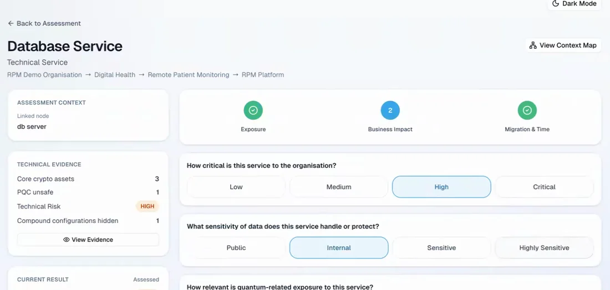
Criticality, data sensitivity and data lifetime, captured with the people who own the service.
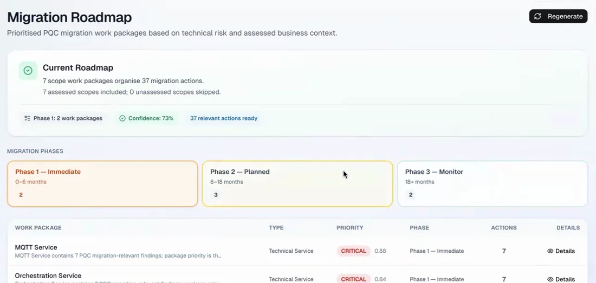
A phased migration roadmap: 0–6, 6–18 and 18+ months.
Screens from the PQLens v3.2 demo on a remote-patient-monitoring testbed.
Why PQLens
Four distinguishers. Together, they make crypto-agility practical.
Holistic discovery
Network, operating systems, software and code, and hardware in one inventory, not one surface at a time.
Crypto-agile by design
Our team works inside the PQC standards process, so the platform is ready for what becomes standard next.
Explainable to everyone
The same evidence, translated into views for engineers, GRC, the CISO and the board.
Sovereign & local
Deploys fully on-premises or on your chosen cloud, with evidence mapped to APRA CPS 234/230 and ASD milestones.
0 of 68
PQC vendors in our 2026 market scan show all four, based on public evidence.
Resilience, shown
Think of every digital transaction as a lamp lit by cryptography. PQLens keeps the lights on:
- A lamp degrades under an AI-assisted attack: PQLens identifies it and swaps the algorithm.
- A risk triangle appears from harvest-now, decrypt-later exposure: PQLens removes the risk and the lamp shines again.
- Q-day switches off a whole cluster: crypto-agile by design, PQLens re-keys it with post-quantum cryptography.
Early validation
Early proof in finance. Relevance far beyond it.
One engine, deployed across regulated finance, higher education and two critical-infrastructure sectors.
APRA-regulated finance
All-layer discovery, a CBOM and a risk-based roadmap for the board, GRC and CISO.
Higher education
University networks, research data and identity systems.
Remote patient monitoring
Devices, gateways and clinical cloud, where health data must stay secret for decades.
EV charging infrastructure
Chargers, back-end and the certificates that link them: long-lived devices that are hard to upgrade.
A practical path to post-quantum readiness
- 01
Focused PoC
Understand your exposure and where to begin.
- 02
Critical systems
Move prioritised systems towards PQC.
- 03
Scale & sustain
Expand coverage and adapt over time.
A transition you can manage. A posture you can sustain.
Monash PQC Sandbox
Rebuild before you deploy
A shared, sector-wide test bed hosted at Monash University. Members bring replicas of their critical systems, run the full cycle (discover, assess, prioritise, transition, control) and leave with a validated roadmap.
Who we are
Built by the team behind the global PQC standards.
Monash research from 2009 on Polynomial-LWE underpins ML-KEM and ML-DSA (FIPS 203 and 204) and earned an IACR Asiacrypt Test of Time Award. Our team co-designed the sampler adopted in FN-DSA (FIPS 206), and our C# and Java implementations of the NIST PQC standards ship in Bouncy Castle.
Founders
A/Prof Amin Sakzad
Co-founder · CSO, Cryptography
Associate Professor at Monash University. Co-designer of the FN-DSA sampler; lattice cryptography and secure implementation.
Bahar Abbas Pour
Co-founder · CTO, Product
Formerly at EY; PhD candidate at Monash. Distributed, cloud-edge and AI-driven systems; leads the PQLens product.
Dr Mohammad Goudarzi
Co-founder · Head of Engineering
Lecturer at Monash University. Builds the PQLens discovery engine, its integrations and on-premises deployment.
Advisors
Prof Ron Steinfeld
Scientific advisor
Professor at Monash University. Cryptographic research underpinning standardised post-quantum cryptography.
Prof Shonali Krishnaswamy
Business advisor
Professor at Monash University. Commercial strategy, from AI research to deeptech enterprise.
FAQ
Questions we hear most
Why act now, if quantum computers are still years away?
Because data stolen today can be decrypted later, and regulators have already set dates. ASD expects a plan by end-2026, migration from 2028 and classical public-key cryptography gone by 2030. NIST deprecates RSA and ECC from 2030 and disallows them after 2035. An enterprise migration takes five years or more.
Is anyone actually obliged to act?
There is no PQC law yet, but boards are accountable. APRA CPS 234 requires information-security capability that keeps pace with threats, CPS 230 extends that to material service providers, and PCI DSS 4.0 already requires an annual cryptographic inventory. Abroad, the G7, UK NCSC, EU DORA, OSFI B-13 and MAS set the same direction.
What does PQLens actually deliver?
A network topology, a standardised cryptographic inventory (CBOM), asset-level risk analysis, a context map from asset to service, a business-impact assessment and a phased migration roadmap, with reports for the board, executives, GRC and technical teams.
Does our data leave our premises?
No. PQLens can deploy fully on-premises, with no foreign agents required, or on a cloud of your choice. Discovery can start passively, from observed traffic, before any active scanning.
We already have security tools. How does PQLens fit?
PQLens is designed to sit alongside the stack you already run, connecting to SIEM, SOAR, CMDB and ITSM tools through standard APIs so findings flow into existing workflows.
Who should start this conversation?
CISOs, CTOs and risk leaders in regulated organisations, especially banks, super funds, insurers, health and energy operators, and anyone holding data that must stay secret for years.
Get started
Preparing for PQC? Come and talk to us.
Start with a focused proof of concept on one environment and leave with a clear view of your exposure and where to begin.